長期トレンド
JKMとJEPXシステムプライスの推移グラフ
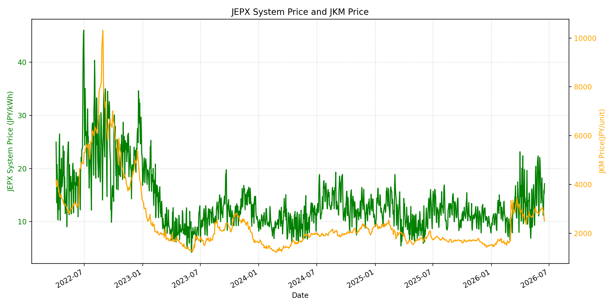
WTIの推移グラフ
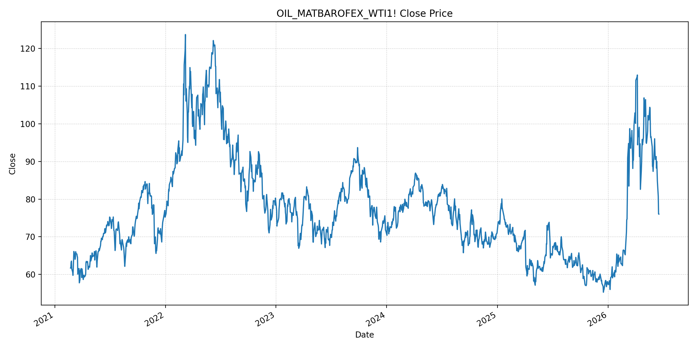
JEPXエリアプライスグラフ（直近一年分）
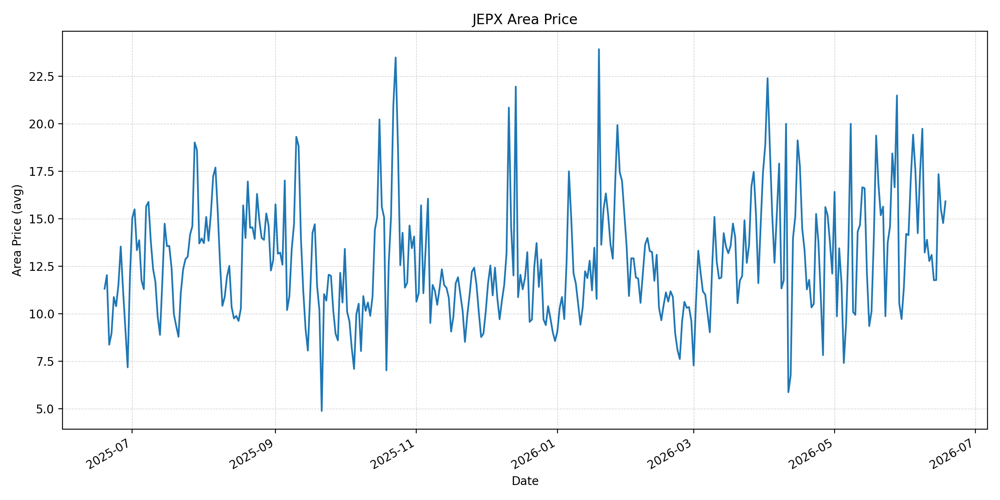
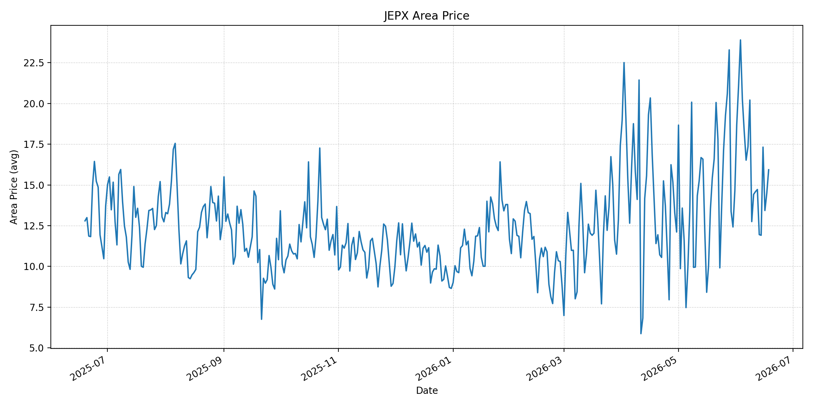
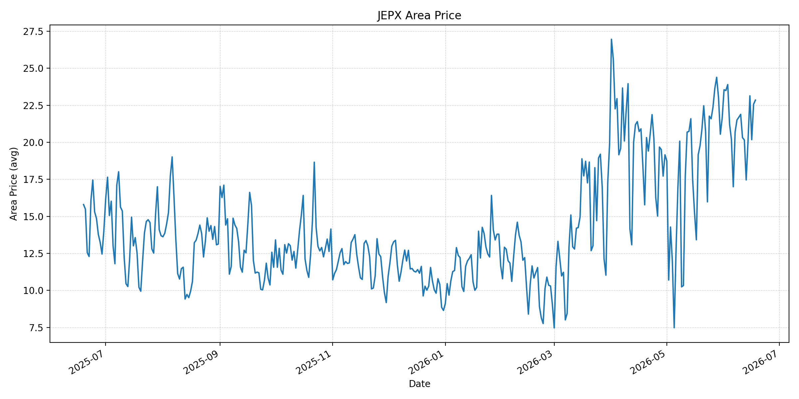
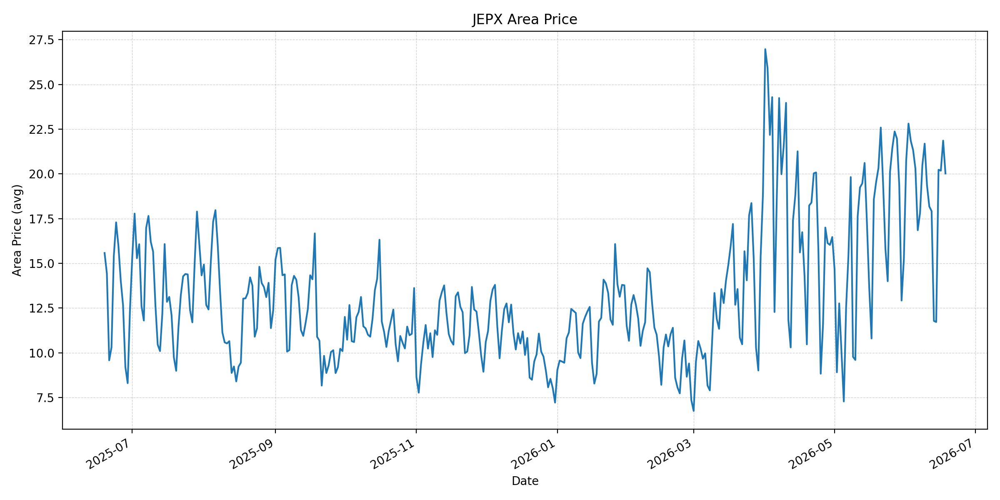
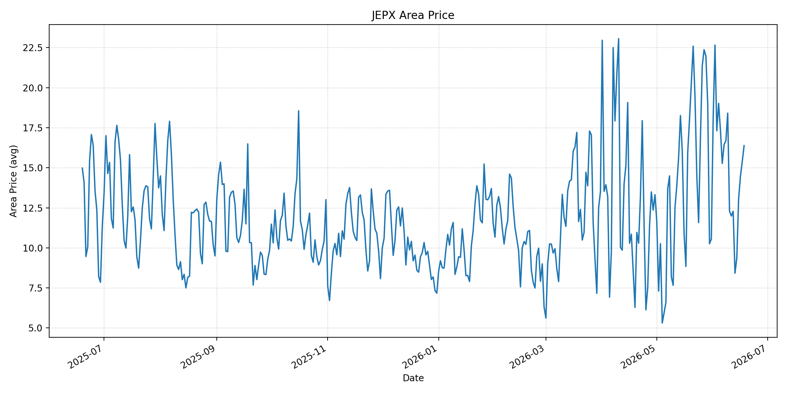
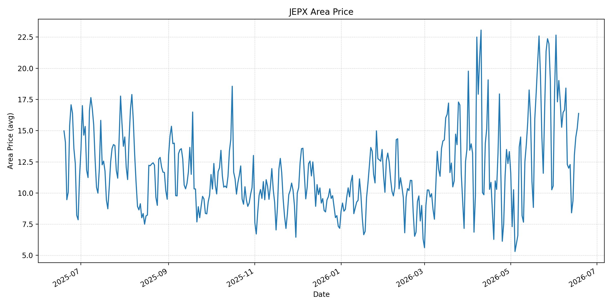
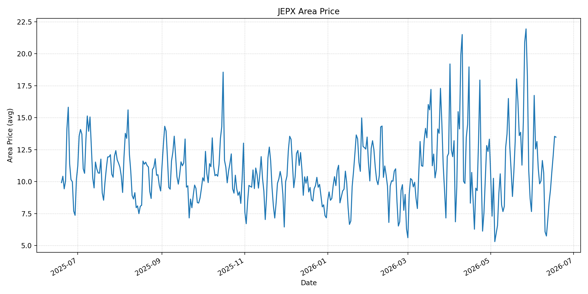
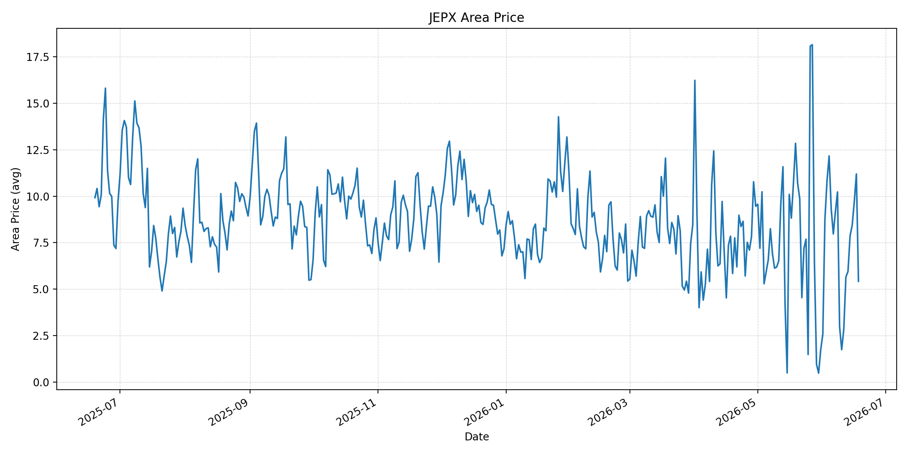
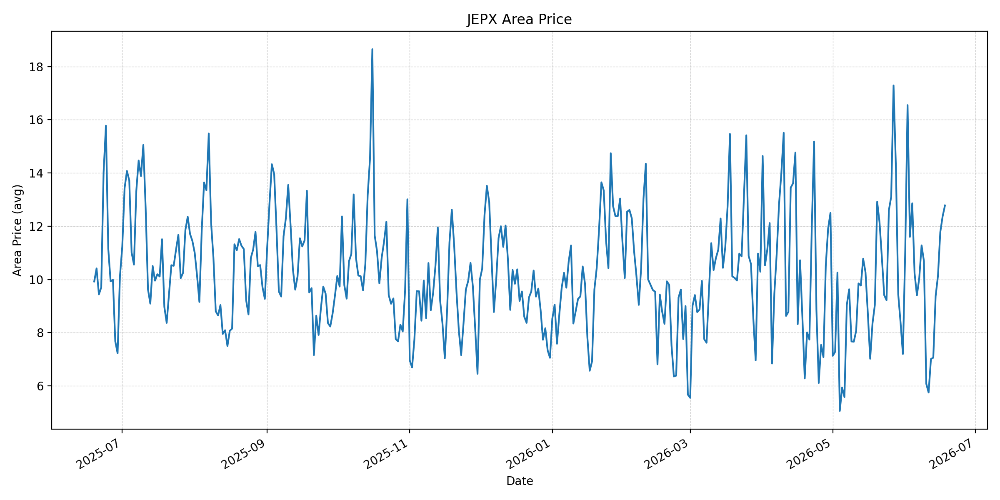
短期トレンド
JKMとJEPXシステムプライスの推移グラフ
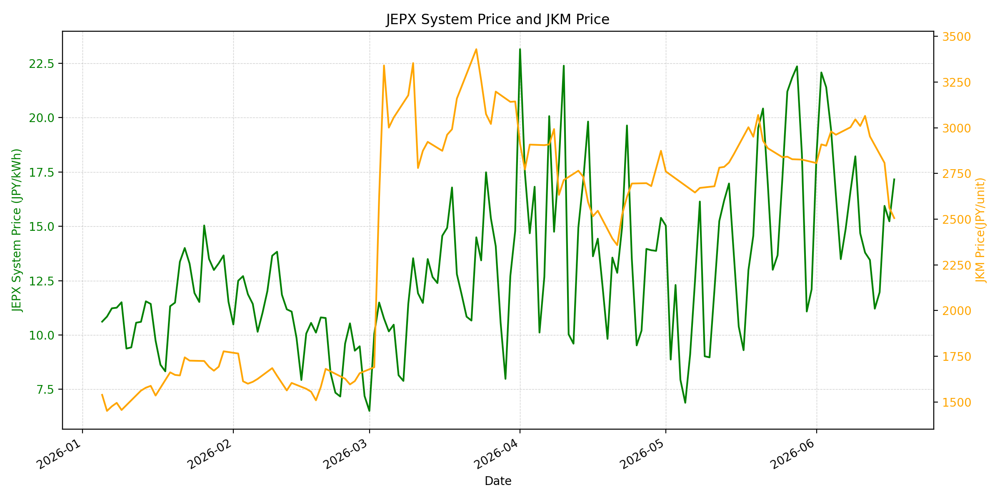
WTIの推移グラフ
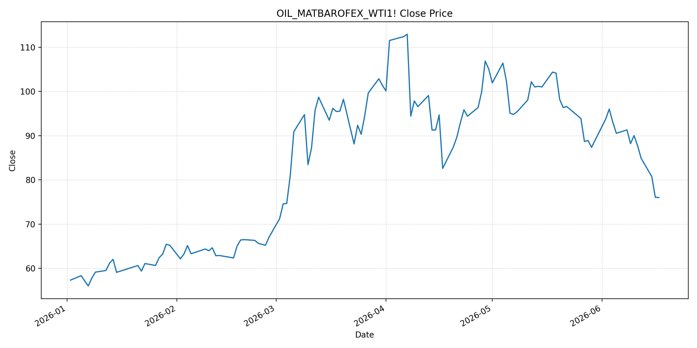
JEPXシステムプライス
JEPXは受渡日ベースの最新非空値で評価しています。最新値は 2026-06-18 分です。先週終値は 2026-06-11 時点の直近値、先月終値は 2026-05-31 時点の直近値で評価しています。
| エリア | 当日価格 | 前日価格 | 前日比（％） | 先週終値 | 先週比（％） | 先月終値 | 先月比（％） | 過去最高値 | 最高値比（％） |
|---|---|---|---|---|---|---|---|---|---|
| システム | 18.00 | 17.16 | 4.90 | 13.79 | 30.53 | 12.10 | 48.76 | 64.06 | -71.90 |
| 北海道 | 15.91 | 14.77 | 7.72 | 12.77 | 24.59 | 11.38 | 39.81 | 73.92 | -78.48 |
| 東北 | 15.93 | 14.49 | 9.94 | 14.59 | 9.18 | 14.64 | 8.81 | 84.92 | -81.24 |
| 東京 | 22.85 | 22.57 | 1.24 | 20.32 | 12.45 | 21.65 | 5.54 | 86.13 | -73.47 |
| 中部 | 20.02 | 21.86 | -8.42 | 18.18 | 10.12 | 15.25 | 31.28 | 52.06 | -61.55 |
| 北陸 | 16.38 | 15.39 | 6.43 | 11.99 | 36.61 | 10.56 | 55.11 | 46.48 | -64.76 |
| 関西 | 16.38 | 15.17 | 7.98 | 11.99 | 36.61 | 10.56 | 55.11 | 46.48 | -64.76 |
| 中国 | 13.48 | 13.54 | -0.44 | 5.75 | 134.43 | 7.66 | 75.98 | 46.48 | -71.00 |
| 四国 | 5.42 | 11.20 | -51.61 | 2.85 | 90.18 | 1.74 | 211.49 | 46.48 | -88.34 |
| 九州 | 12.78 | 12.37 | 3.31 | 5.75 | 122.26 | 7.20 | 77.50 | 40.54 | -68.48 |
LNG先物価格
最新値は 2026-06-17 の LNG(close) です。先週終値は 2026-06-10 時点の直近値、先月終値は 2026-05-29 時点の直近値で評価しています。
| 当日価格 | 前日価格 | 前日比（％） | 先週終値 | 先週比（％） | 先月終値 | 先月比（％） | 過去最高値 | 最高値比（％） |
|---|---|---|---|---|---|---|---|---|
| 2506.00 | 2562.00 | -2.19 | 3010.00 | -16.74 | 2826.00 | -11.32 | 10319.00 | -75.71 |
石油先物価格
最新値は 2026-06-17 の OIL(close) です。先週終値は 2026-06-10 時点の直近値、先月終値は 2026-05-29 時点の直近値で評価しています。
| 当日価格 | 前日価格 | 前日比（％） | 先週終値 | 先週比（％） | 先月終値 | 先月比（％） | 過去最高値 | 最高値比（％） |
|---|---|---|---|---|---|---|---|---|
| 76.01 | 76.05 | -0.05 | 90.03 | -15.57 | 87.36 | -12.99 | 123.70 | -38.55 |
ニュース
イラン情勢に関するニュース
- 2026年6月17日、APは、米国とイランが戦争終結の合意に署名し、イランの高濃縮ウラン希釈、米国の一部制裁免除、ホルムズ海峡の一時的な無償通航が盛り込まれたと報じました。最終合意までの交渉期間は60日です。 参照: AP, 2026-06-17
- 2026年6月17日、Guardianは、合意が即時・恒久的な軍事作戦停止を掲げる一方、核問題、制裁解除、レバノンでのイスラエル・ヒズボラ対応は未解決で、どちらの当事者も交渉から離脱し得ると整理しました。 参照: The Guardian, 2026-06-17
ホルムズ海峡経由の石油・LNGに関するニュース
- 2026年6月18日、Guardianのライブ報道は、ホルムズ海峡が30日以内に通常水準へ戻る計画で、60日間は無償通航とされる一方、イラン側がその後の通航料徴収を示唆していると伝えました。通航制度はなお流動的です。 参照: The Guardian Live, 2026-06-18
- 2026年6月18日、MarketWatchは、海峡再開後も原油・石油製品が優先され、LNGや肥料などの物流回復は遅れる可能性があると報じました。中東原油フローは段階的回復で、船会社の安全判断も制約になります。 参照: MarketWatch, 2026-06-18
ホルムズ海峡経由でない石油・LNGに関するニュース
- 過去24時間で、日本向けの非ホルムズ新規大型調達に関する強い追加報道は確認できませんでした。一方、APは2026年6月17日、IEAがアジアに対し、ホルムズ依存を踏まえてエネルギー源と輸送ルートの多様化を急ぐ必要があると警告したと報じています。 参照: AP, 2026-06-17
- 2026年6月17日、APは、イラン戦争終結後も燃料、肥料、航空、物流コストの低下は遅れ得ると報じました。非ホルムズ調達でも、在庫、船腹、保険、サーチャージの調整には時間がかかる可能性があります。 参照: AP, 2026-06-17
日本国内のイラン戦争に関係するニュース
- 過去24時間で、JEPX制度や国内電力需給ルールを直接変更する日本政府の強い新規発表は確認できませんでした。直近では経済産業省が2026年5月20日に、今夏は全エリアで最低限必要な予備率3%を確保できるため節電要請は実施しないと発表しています。 参照: 経済産業省, 2026-05-20
- 同発表では、国際情勢の変化、異常気象、発電所休廃止、火力発電所の地域集中を引き続きリスクとして明記しています。ホルムズ通航再開が進んでも、国内電力市場では燃料調達と地域需給を分けて確認する必要があります。 参照: 経済産業省, 2026-05-20
インサイト
ニュース事項による日本の電力市場への影響（短期：数日〜1週間）
- JEPXシステムプライスは 18.00 円/kWhで前日比 4.90% 上昇し、先月比は 48.76% です。LNGは 2506.00、OILは 76.01 と下落基調ですが、燃料安が即座に卸価格へ反映される状況ではありません。
- 東京は 22.85 円/kWh、中部は 20.02 円/kWhと高く、東日本・中部は燃料心理よりも地域需給の影響が残っています。ホルムズ再開合意は短期の燃料上振れを抑えますが、30日復旧と通航料議論が残るため、1週間程度は市場の警戒が残ります。
- 四国は 5.42 円/kWhで前日比 -51.61% と大きく低下しました。一方、中国と九州は先週比でそれぞれ 134.43%、122.26% と高く、低い基準値からの反発が続いています。燃料価格だけでなくエリア別需給を優先して見ます。
ニュース事項による日本の電力市場への影響（長期：1ヶ月〜半年）
- APとGuardianの報道では、米イラン合意は大きな前進ですが、最終合意まで60日、ホルムズ通常化まで30日、無償通航は60日という期限付きです。LNGは過去最高値比 -75.71%、OILは -38.55% と低位でも、制度・保険・安全確認のリスクは残ります。
- MarketWatchが指摘するように、海峡再開後も原油が優先され、LNGや肥料などは後回しになる可能性があります。日本の火力燃料調達では、LNGスポット、船腹、保険料の正常化が遅れれば、1ヶ月から半年の卸価格下押しは限定的になります。
- 経済産業省は今夏の節電要請を見送っていますが、国際情勢と火力発電所の地域集中をリスクとして残しています。JEPXシステムの先月比 48.76% 上昇と東京の20円台継続を踏まえると、燃料市況が下がっても夏季需給の地域差が価格を支える可能性があります。